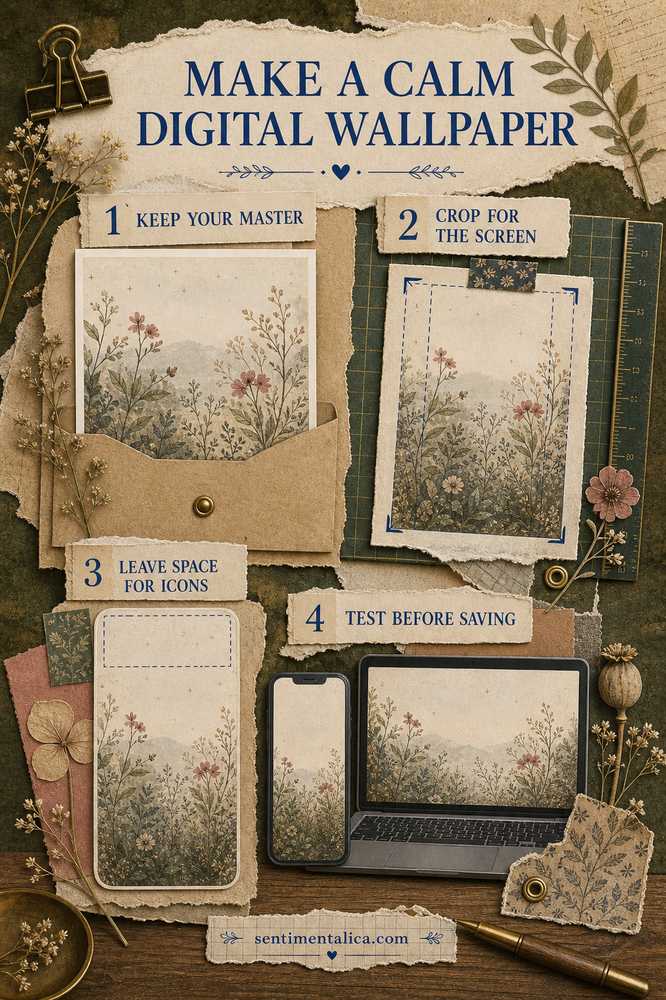
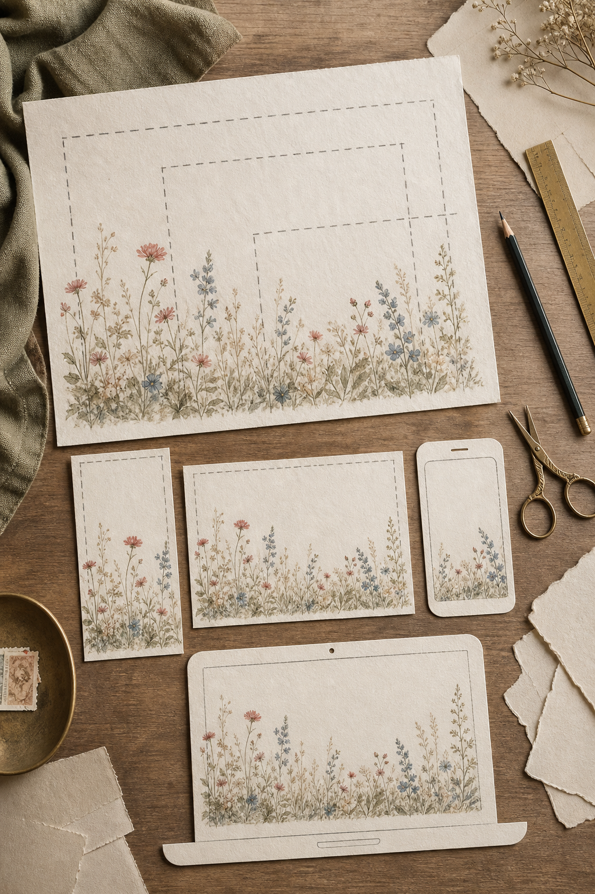
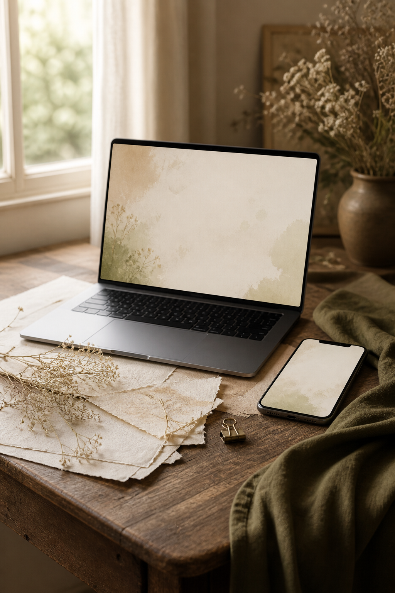
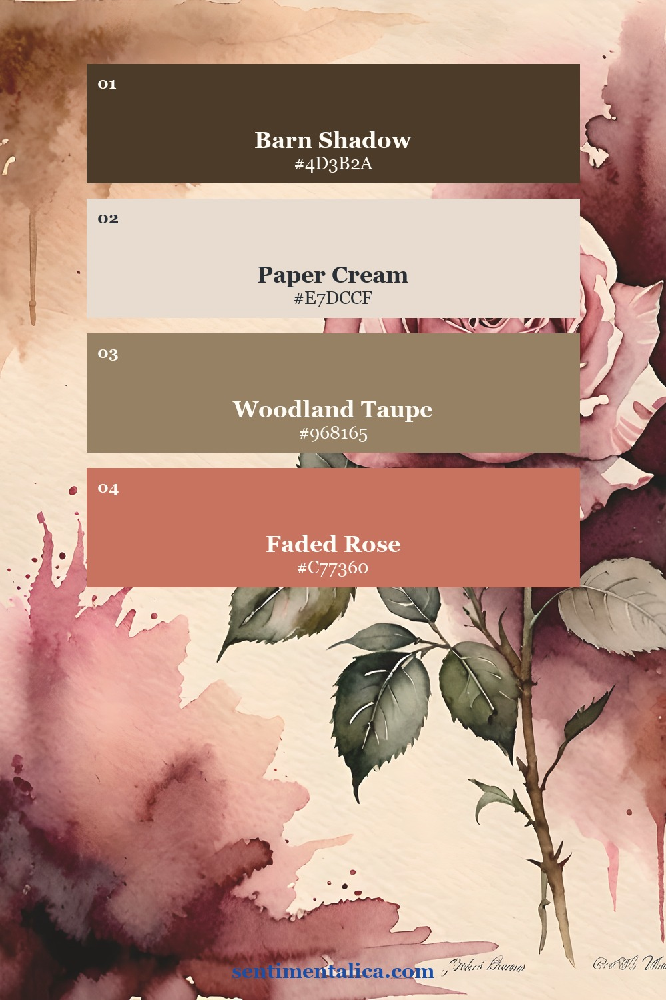
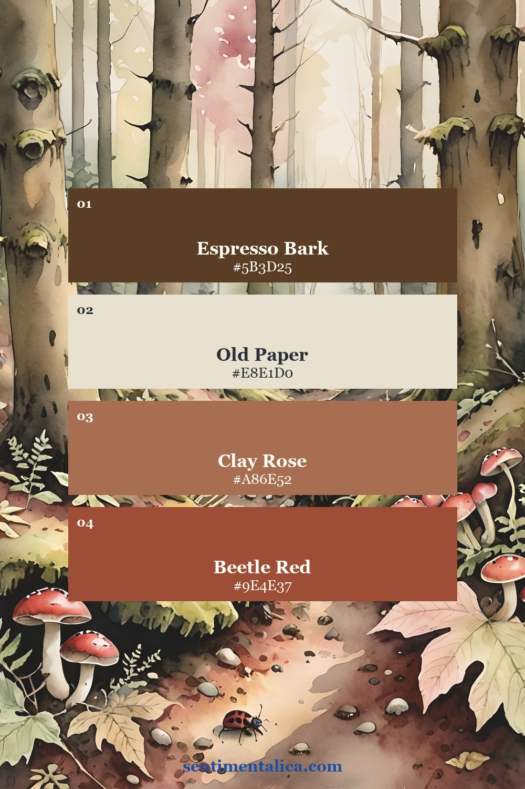
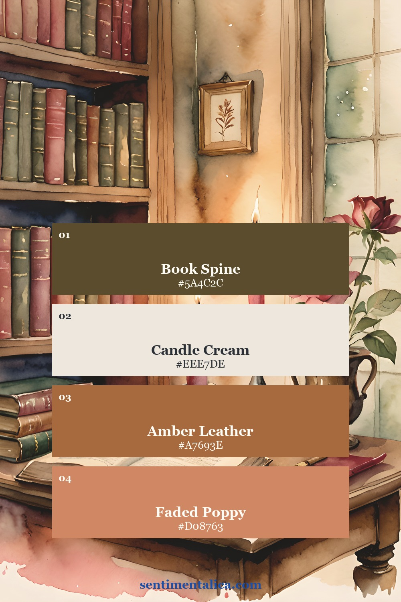
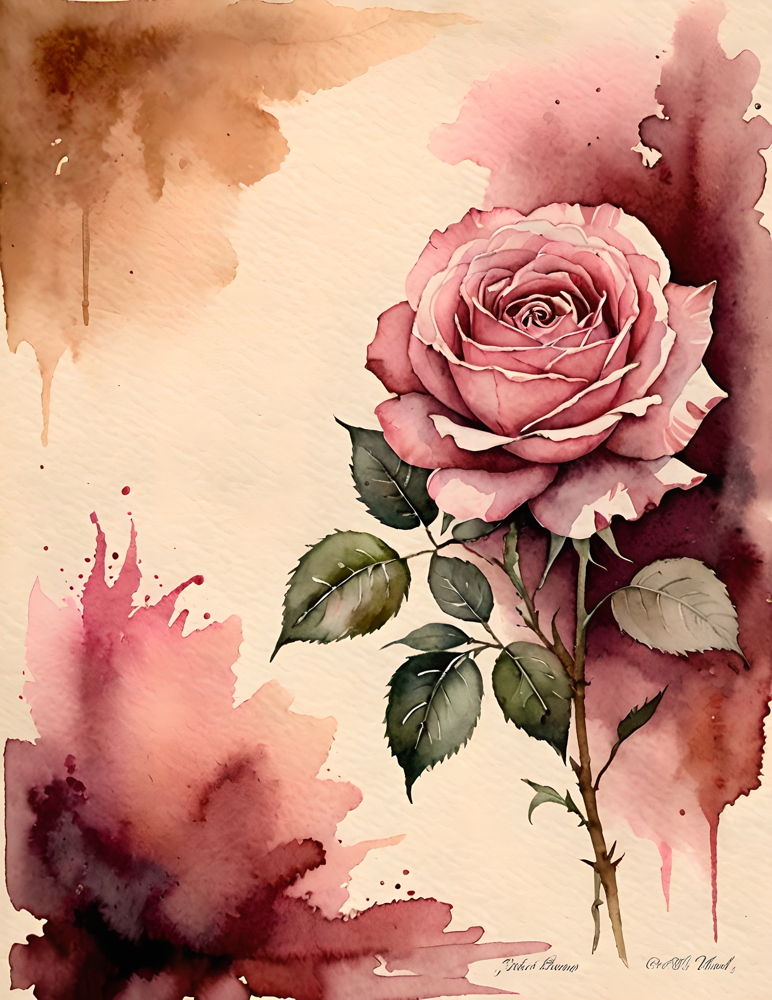
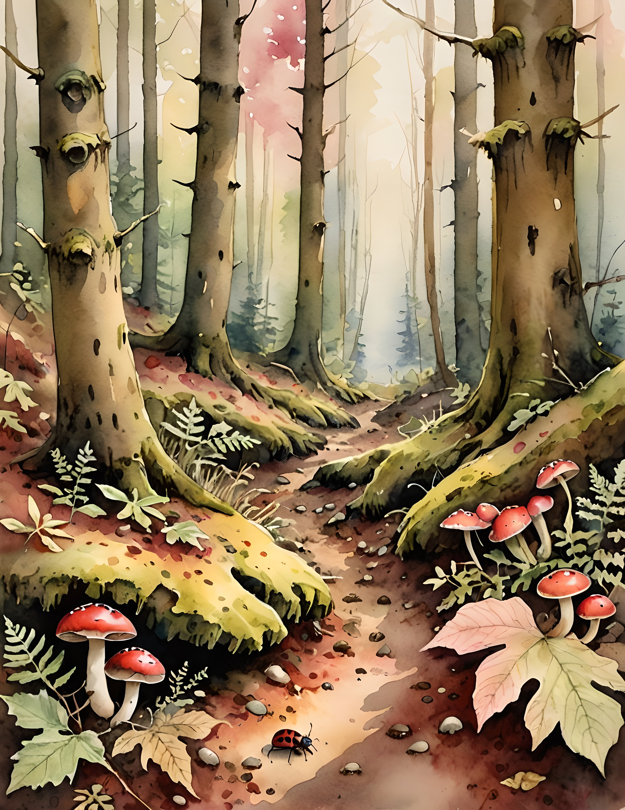
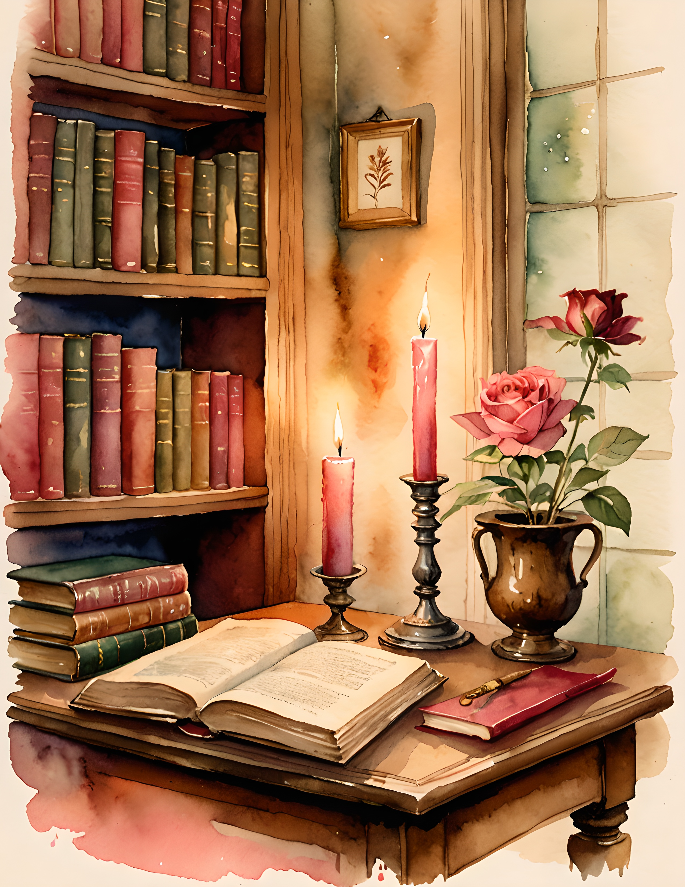

Printable art can live beyond paper. If a file license allows personal use, you can crop artwork you own into a calm background for your phone, tablet, or computer. The secret is not simply making the image fit. A useful wallpaper needs quiet space for the clock, icons, folders, and widgets.
Important: the Moth Meadow Etsy collection shown in this article is a printable art and scrapbook image pack. It does not include ready-sized phone or desktop wallpaper files. The steps below explain how you can create personal wallpapers from artwork yourself.

1. Protect the original file
Keep the downloaded master untouched. Duplicate the image before you crop, resize, or adjust it. Make separate working copies for each device because a tall phone screen and a wide computer monitor need very different compositions.
Start with the highest-resolution version available. Export the finished wallpaper at least as large as your device display. Enlarging a small image can soften fine lines, while repeatedly saving a JPEG can create visible compression. PNG is useful for crisp illustration; a high-quality JPEG is usually lighter and works well for painterly art.
2. Crop for the screen, not the frame
For a phone, use a tall portrait crop. Place the main flower, insect, doorway, or object below the center so the clock has room above it. For a desktop, use a wide landscape crop and keep the busiest detail away from the side where your folders usually sit. Never stretch an image to force it into a new shape.

If the source page is too narrow for a desktop, place it on a larger canvas filled with a color sampled from its background. A soft cream, shadowy brown, or muted green margin will look intentional and preserve the original proportions.
3. Leave visual breathing room
A page that works beautifully as a print can feel crowded behind app icons. Choose artwork with one quieter region, or crop so the focal detail sits in the lower third. You can also soften only the empty background area with a very light color wash. Do not blur the main artwork into an indistinct haze.

Three Moth Meadow moods to try
These palette cards are built from three real Moth Meadow pages. The first is romantic and rose-led, the second feels like a shadowy woodland floor, and the third has the warmth of old books and candlelight. Use the colors as margins, icon-zone backgrounds, or simple companion wallpapers.



4. Test before you save the final version
Set the draft as your background and look at the real lock screen or desktop. Check whether the time is readable, whether a face or flower is trapped beneath an icon, and whether the crop still feels balanced when notifications appear. Move the artwork, export again, and test once more. A small shift often makes a large difference.
Keep one lighter version and one darker version if your device changes appearance during the day. A simple palette-only background can also pair with the detailed artwork: use the illustration on the lock screen and a quiet sampled color on the home screen.
Use artwork within its license
A wallpaper you make for your own device is a personal-use adaptation. Do not upload, share, give away, or sell the transformed file unless the original license clearly permits that use. When in doubt, keep the result on your own devices and check the seller's current terms.
See the real Moth Meadow pages
These are three genuine images from the printable collection, not AI mockups. They show why one pack can support several wallpaper moods while still feeling visually connected.



Begin with one screen and one crop. Once the quiet space feels right, save the settings as a small template for the next image. For more gentle color and composition ideas, continue through the Sentimentalica journal.